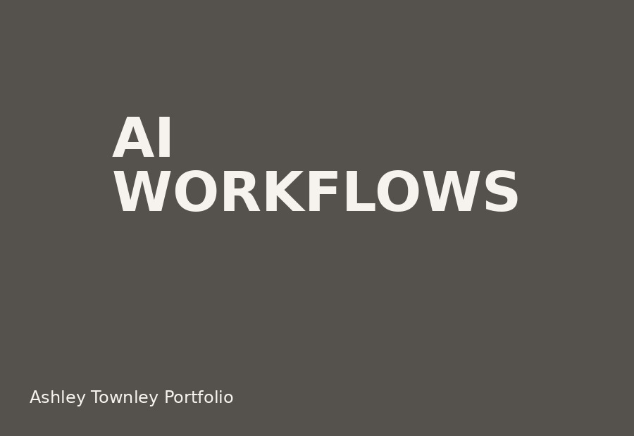

01
Budget forecasting + pacing
Designed workflows that turned pacing volatility into clearer decisions across $6M+ in annual media investment.
Systems
My strongest work lives in the space between strategy and operations: making the invisible work visible, repeatable, and easier to act on.
01
Designed workflows that turned pacing volatility into clearer decisions across $6M+ in annual media investment.

02
Created operational visibility across accounts, channels, and performance signals so risks surfaced earlier and conversations got sharper.

03
Built AI-supported systems for execution, budget tracking, monitoring, documentation, and strategic synthesis.
When teams are overloaded, the answer is not always more people. Sometimes it is clearer signals, better defaults, and systems that remove drag before it becomes chaos.